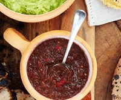

Grilled Salsa Roja
Bon Appetit
Ingredients
-
-
8
plum tomatoes, cored
-
1/2
medium white onion
-
4
serrano chiles
-
3
garlic cloves, peeled
-
1
cup (packed) cilantro leaves with tender stems
-
Kosher salt
Instructions
-
-
Prepare a grill for high heat. Grill tomatoes, onion, and chiles, turning occasionally, until lightly charred and fragrant, about 4 minutes for chiles and 6–8 minutes for tomatoes and onion. Transfer to a plate and let cool.
-
Purée tomatoes, onion, chiles, garlic, and cilantro in a blender until mostly smooth and only small pieces remain; season with salt.
-
Do Ahead: Salsa can be made 2 days ahead. Cover and chill.
Notes